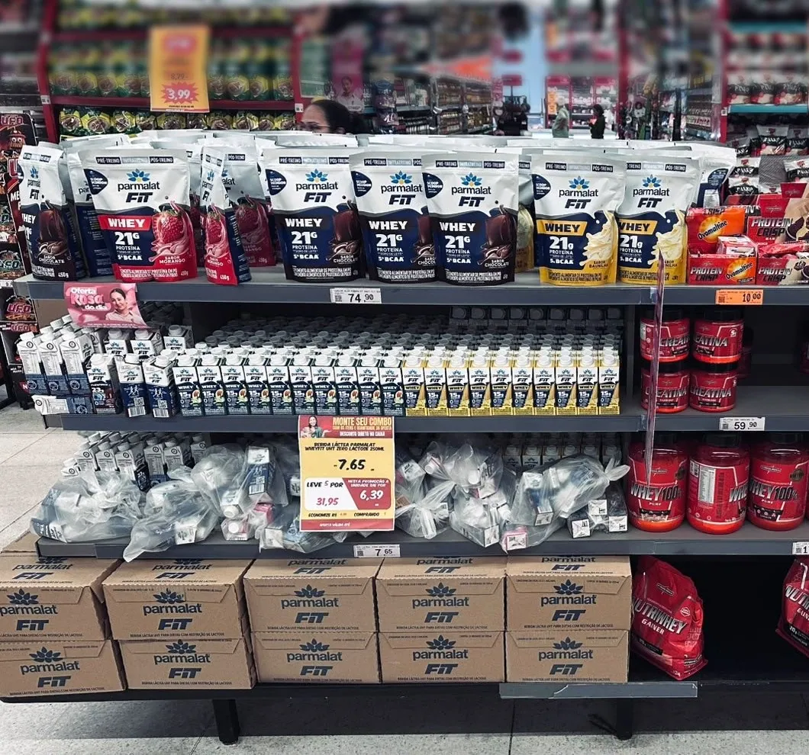

Lactalis no D'avó Oratório · Ambientação de categorias
Seis espaços, uma arquitetura de escolha.
Presença de marca que vira clareza de escolha, desejo e resultado no ponto de venda, sem móvel novo e sem mais ruído.
Proposta 75LABEstratégia → Design → ProduçãoApresentação: Vanessa Morelli
O desafio
O pedido é ambientar. A necessidade é ajudar a escolher.
Ambientação econômica e premium dos espaços Lactalis que já existem no D'avó Oratório.
Transformar áreas dispersas e carregadas em pontos fáceis de escolher, desejáveis e simples de manter.
Uma loja-referência em execução de categoria: o shopper acha a resposta rápido, o produto continua protagonista e a operação mantém o padrão.
Regras do jogoSem móvel novo e sem piso · loja aberta durante a implantação · preço, refrigeração, limpeza e fluxo intactos · convivência com a comunicação do D'avó
A loja hoje · visita técnica
Seis pontos, quatro marcas, muito estímulo.
Hipermercado de grande porte, com promoção forte, sinalização própria e mix profundo.
Placa central sem mensagem e garrafinhas em sacos plásticos.
Metade Fit, metade concorrência; sacos e caixas de estoque à vista.
Cartaz de combo na frente do produto e nenhuma leitura de ocasião.
Cartazes de oferta sobre a frente e nenhuma navegação por ocasião.
Displays de papelão em alturas diferentes e famílias misturadas.
Réguas genéricas, tipos sem ordem e saco plástico no poço.
Alerta de escopoO briefing cita cinco espaços; a visita técnica registrou seis, além da ilha Titanic. O escopo final fecha antes da produção.
O shopper
Em poucos segundos, o shopper precisa achar a resposta.
A compra acontece sob duas pressões: valor e bem-estar. Ele busca preço, mas também proteína, zero lactose, conveniência e prazer em casa.
- 1Chegada à área
Reconhecer a categoria rápido
BarreiraAmbiente de loja intenso e competitivo
RespostaTesteira curta e marca legível a distância
- 2Comparação
Saber qual produto faz sentido
BarreiraMuitos SKUs, preços e claims
RespostaNavegação por ocasião ou família
- 3Decisão
Escolher com segurança
BarreiraO preço promocional domina a leitura
RespostaBenefício junto do produto
- 4Retirada
Pegar e levar o produto
BarreiraCaixas, reposição e divisórias ruins
RespostaFrente limpa e exposição estável
Tensão centralComo criar valor percebido e clareza num varejo de alta intensidade visual, sem transformar a ambientação em mais ruído?
O que aprendemos
Quatro ideias guiam o projeto.
A categoria já é a mídia.
A ambientação dá ordem à abundância. Não compete com ela.
O shopper compra uma resposta, não um portfólio.
Cada espaço precisa responder ao momento dele.
Président: valor antes de variedade.
Qualidade primeiro, navegação por família depois.
A versão econômica também tem impacto.
Quando investe em hierarquia, blocagem e acabamento.
Território recomendado
Escolhas que acompanham seu dia.
Cada marca responde a um momento real da rotina. A loja fica unida pela lógica de escolha, e cada marca mantém os próprios códigos.
Rotina ativa
Parmalat Fit · 3 espaçosResolve a navegação: whey em pó, pronto para beber e para levar.
Ao longo do diaLeveza
Batavo Pense ZeroDisciplina operacional no ponto mais seguro: promotora fixa e reposição diária.
Na refeiçãoRefeição
Président · heroA maior ambição estética: valor do queijo e famílias claras.
Depois da refeiçãoPrazer
Batavo SobremesasConstrói desejo e ordena os sabores sem poluir.
Exposições fragmentadas, dependentes de embalagem e preço.
Pontos de categoria legíveis, desejáveis e fáceis de abastecer.
Arquitetura de escolha: blocagem, códigos de marca, mensagem de ocasião e acabamento proporcional ao ponto.
Como funciona
Um sistema em três camadas, o mesmo nos seis espaços.
- 1
Encontrar
Uma testeira baixa, no contorno do móvel ou no suporte que já existe, com marca e ocasião.
- 2
Escolher
Réguas no trilho de preço que navegam por formato, família ou ocasião. A etiqueta do D'avó fica sempre por cima.
- 3
Sustentar
Bandejas, cartões e nomes trocáveis no lugar de papelão e sacos. A loja limpa, repõe e mantém.
- A estrutura do móvel não muda: sem móvel novo, sem piso.
- Nenhum topo alto e nenhuma lateral volumosa.
- Nada na frente de prateleira ou abertura.
- Preço, ventilação e acesso técnico sempre livres.
- Sem LED dentro da área refrigerada.
- Perto do chão, só marca e imagem.
Rotina ativa · Parmalat Fit
Ilha quadrada Whey
“Qual é o seu momento Fit?”
Referência de proteína e rotina ativa. Só PS e adesivo sobre as placas que já existem; nada na frente das prateleiras e sem wobbler.
- 1Testeira dupla face com faca especialPS 3 mm, no mastro atual · 78 × 34 cm1
- 2Adesivo da placa centralVinil, frente e fundo · 34 × 31 cm2
- 3Adesivo do painel com janelaVinil, lateral esquerda · 80 × 93 cm1
- 4Adesivo do painel lateralVinil, lateral direita · 39 × 93 cm1
- 5RodapéVinil, nas 4 faces · 80 × 10 cm4
- 6Colunas e triângulo do topoVinil, só nas faces brancas7
- 7Fita de bordaVinil 2 cm no tampo e nas prateleiras6,7 m
16 peças + ≈ 6,7 m de fita de borda
Sai o wobbler. A promotora repõe as garrafinhas sem saco plástico.
Rotina ativa · Parmalat Fit
Ilha de nutrição esportiva
“Mais que proteína para a sua rotina”
Ajudar a comparar e escolher. Sem acrílico: réguas no trilho atual, placas baixas na base e uma testeira em T que fica em pé sozinha.
- 1Réguas de 130 cmWhey em pó, Pronto para beber e Para levar · 130 × 4 cm6
- 2Réguas de 90 cmCabeceira · 90 × 4 cm3
- 3Placas de basePS 3 mm com pé, só marca e imagem · 40 × 20 cm5
- 4Testeira central em T2 placas de PS 3 mm em L, dobra a quente · 110 × 62 cm1
- 5Faixa de rodapéVinil, só logo e grafismo · 3 cm de altura3,8 m
15 peças + ≈ 3,8 m de rodapé
Topo da testeira abaixo da linha dos olhos. Perto do chão, nenhuma frase.

AntesDepoisRotina ativa · Parmalat Fit
Ponta de gôndola seca
“Whey 21 g de proteína”
Uma moldura em volta do whey em pó e réguas num modelo só, com uma frase a cada duas prateleiras. As etiquetas do D'avó ficam em janelas fixas.
- 1Testeira com faca especialPS 3 mm (premium: ACM 3 mm) · ≈ 133 × 34 cm1
- 2Moldura vazada do whey em póPS 3 mm, aba “Whey 21 g” no mesmo corte · 96 × 56 cm1
- 3Réguas com fraseEnergia para o seu dia · Proteína líquida · Nutrição em qualquer rotina · 130 × 5,8 cm3
- 4Réguas gráficasMesma arte, sem texto · 130 × 5,8 cm4
9 peças
O cartaz “Monte seu combo” sai da frente do produto: combinar com o D'avó onde ele fica.
Leveza · Batavo Pense Zero
Ponta refrigerada
“Seu dia com mais sabor”
O ponto mais seguro de executar: promotora fixa e reposição diária. Cada prateleira responde a uma ocasião.
- 1Testeira superiorPS 2 mm, faca nas frutas (premium: ACM 3 mm) · 230 × 14,2 cm1
- 2Adesivos laterais internosVinil eletrostático no gabarito do vidro · ≈ 37–46 × 130 cm2
- 3Réguas por ocasiãoPS 0,5 mm ou PETG para frio · 108 × 5 cm6
- +Adesivos externos · opcionalMesma arte, na face do vidro voltada para o corredor2
9 peças + 2 opcionais
Arte de referência recortada e endireitada. Na arte final: “0% adição de açúcar” e packshot oficial.
Refeição · Président Hero do projeto
Gôndola fria Président
“O queijo certo para cada momento”
Bandejas de polionda no lugar dos displays de papelão, com um cartão de família que o promotor troca conforme o estoque. Nada acima do letreiro do D'avó.
- 1TesteiraPremium: ACM champanhe · econômica: PS vermelho · 93 × 9,2 cm1
- 2Bandejas de prateleiraPolionda 4 mm vermelha, sem cola · 30 × 38 cm13
- 3Bandeja do poçoMesma construção, sob a muçarela · 60 × 38 cm1
- 4Bolsos frontaisPVC cristal 0,5 mm · janela de 28 × 4 cm13
- 5Cartões de família trocáveisMuçarela, Especiais, Prato, Minas, Gouda, Ralado19
- 6Wobblers na borda da prateleiraPS 1 mm · Ø 8 cm, Lasanha e Hambúrguer2
49 peças
Premium e econômica usam as mesmas bandejas, bolsos e cartões. Muda a testeira.
Prazer · Batavo Sobremesas
Gôndola de sobremesas
“Hora da sobremesa”
Abrir o apetite e ordenar a escolha sem poluir. Os nomes são soltos: o promotor encaixa e move conforme o estoque.
- 1Testeira na sanefaPS 1 mm, logo e as sobremesas em foto · 125 × 16 cm1
- 2Réguas-baseMarrom e creme contínuo, sem separar os tipos · 125 × 3,9 cm5
- 3Nomes soltosPETG 0,5 mm: Pudim e Manjar, Flan e Creamy, 8 de cada24
- 4Faixa do poçoSem texto · 125 × 3 cm1
- 5Stoppers, um por tipoPS 2 mm frente e verso · 16 × 20 cm3
34 peças
Luz, saída de ar e grade de retorno livres. Sem wobbler e sem acrílico.
O kit completo
132 peças. Nenhum móvel novo.
Tudo entra sobre o que a loja já tem: sanefa, mastro, trilho de preço, placas e prateleiras.
Ilha quadrada
161 testeira dupla face · 15 adesivos sobre as placas · ≈ 6,7 m de fita de borda
Ver o espaço → Parmalat FitIlha de nutrição
159 réguas · 5 placas de base · 1 testeira em T · ≈ 3,8 m de rodapé
Ver o espaço → Parmalat FitGôndola seca
91 testeira · 1 moldura · 7 réguas, 3 delas com frase
Ver o espaço → Batavo Pense ZeroPonta refrigerada
91 testeira · 2 adesivos laterais · 6 réguas por ocasião · 2 adesivos externos opcionais
Ver o espaço → PrésidentGôndola fria
491 testeira · 14 bandejas · 13 bolsos · 19 cartões · 2 wobblers
Ver o espaço → Batavo SobremesasGôndola fria
341 testeira · 5 réguas · 24 nomes soltos · 1 faixa · 3 stoppers
Ver o espaço →- 6 testeiras
- 27 réguas
- 17 adesivos
- 27 bandejas e bolsos
- 43 cartões e nomes trocáveis
- 12 placas, moldura, stoppers e wobblers
Mais ≈ 10,5 m de fita de borda e rodapé. Quantidades confirmadas depois da medição na loja.
Dois níveis de investimento
A mesma arquitetura, em dois níveis de acabamento.
Impacto pela hierarquia, pela blocagem e pelo acabamento.
- Testeiras em PS impresso com laminação fosca.
- Réguas, bandejas, cartões, nomes, stoppers e adesivos iguais aos da premium.
- Kit de escala para as outras lojas D'avó.
Mais materialidade onde a marca pede valor.
- Testeiras em ACM 3 mm: champanhe escovado no Président, ACM no Pense Zero e na gôndola seca.
- Adesivos externos nos vidros do Pense Zero, voltados para o corredor.
- Luz só em moldura externa, com ponto elétrico e aval técnico. As ilhas Parmalat Fit não têm energia.
Nos doisGuia de implantação e reposição de uma página por ponto. Valores fechados depois da medição na loja e do escopo final.
Próximos passos
Da aprovação à loja montada.
- 1
Fechar o escopo
Quais cinco dos seis pontos entram, e se a ilha Titanic faz parte.
- 2
Medir e fotografar
Medidas finais na loja (a VT mistura mm e cm) e as faces que não foram fotografadas.
- 3
Validar com as marcas
Claims Triplo Zero e 21 g, famílias e SKUs, logos em vetor e packshots oficiais.
- 4
Prototipar
Um ponto refrigerado e um seco, com teste de leitura a 2 m e de fixação no frio.
- 5
Produzir e implantar
Kit por ponto e um guia de uma página para a promotora repor e manter.
- 6
Medir o resultado
Sell-out por SKU, ruptura, conformidade e tempo de reposição, contra um baseline.
Com o D'avóOnde fica o cartaz “Monte seu combo” e se o material de Outubro Rosa pode sair da ponta Pense Zero.
75LAB · Estratégia, Design e Produção
Da visita técnica à loja montada.
Vanessa Morelli
Diretora Comercial
- E-mailvanessa.morelli@75lab.com.br
- Telefone(11) 98398-2803
- Site75lab.com.br
- E-mailcontato@75lab.com.br
- Instagram@setecincolab
Material de apoio
Decupagem do briefing
| Contexto | Hipermercado de grande porte, com alto estímulo promocional, sinalização própria forte e mix profundo. |
|---|---|
| Marcas | Parmalat Fit, Batavo Pense Zero, Batavo Sobremesas e Président. |
| Desafio declarado | Ambientar móveis existentes em alternativa econômica e premium. |
| Desafio real | Simplificar a escolha e fazer cada marca se destacar sem criar mais ruído visual. |
| Objetivo de negócio | Aumentar sell-out, presença qualificada e valor percebido do portfólio Lactalis. |
| Objetivo de trade | Ganhar destaque sem comprometer abastecimento, preço, refrigeração, limpeza ou fluxo. |
| Restrições | Sem mobiliário novo e sem piso; orçamento aberto; prazo curto; loja ativa; convivência com as estruturas do D'avó. |
Material de apoio
Contexto de marca
| Papel no PDV | Direção de linguagem | |
| Parmalat Fit | Rotina ativa, proteína e praticidade. | Clara, dinâmica e funcional. Benefício antes de tecnicismo. |
| Batavo Pense Zero | Escolha leve, com atributos objetivos de produto. | Direta, fresca e organizada por sabor e formato. |
| Président | Qualidade, especialidade e escolha de queijo. | Premium, sensorial e com curadoria de famílias. |
| Batavo Sobremesas | Prazer e repertório de sabores dentro da rotina. | Apetitosa, acolhedora e visualmente ordenada. |
A loja deve fazer o grupo parecer forte pelas boas experiências de marca. Uma identidade “Lactalis” muito visível sobre as marcas tende a diluir os códigos que já têm reconhecimento na categoria.
Material de apoio
Concorrência e tensões
| Concorrência e ruído | Espaço de diferenciação | |
| Nutrição esportiva | Integralmédica, Max Titanium, Nutrify, Nutren, Nescau Protein e outros códigos “maromba”. | Organizar por momento: pré, durante e pós-treino. |
| Pense Zero | Iogurtes zero, funcionais e proteicos, com muitos atributos parecidos. | Tornar o “Triplo Zero” instantâneo e fácil de navegar. |
| Président | Polenghi, Tirolez, Aurora, Sadia, Santa Clara e fracionados. | Curadoria premium: família, gramatura e descoberta. |
| Sobremesas | Danette, Chandelle, Nestlé, Vigor e pressão de preço. | Abrir o apetite e variar a escolha sem poluir. |
- O shopper quer decidir rápido, mas encontra categorias técnicas e visualmente poluídas.
- A Lactalis precisa ganhar presença, mas não pode esconder produto, preço ou operação.
- O briefing pede premiumização, mas a loja precisa de soluções resistentes, acessíveis e fáceis de manter.
Material de apoio
Os sete insights
- A categoria já é a mídia. A ambientação precisa dar ordem à abundância, não competir com ela.
- O shopper não compra “portfólio Lactalis”; compra uma resposta para o momento dele.
- Pense Zero é o ponto com maior segurança de execução, porque tem abastecimento diário dedicado.
- Président precisa construir valor antes de explicar variedade: qualidade primeiro, navegação depois.
- LED só cria valor quando reforça desejo, não quando cria risco de manutenção.
- A presença Parmalat Fit está pulverizada: sem lógica de categoria, pode parecer dispersão em vez de domínio.
- A versão econômica pode ter alto impacto se investir em hierarquia, blocagem e acabamento.
Material de apoio
Territórios conceituais
| Ideia | Aplicação | Avaliação | |
| Escolhas que acompanham seu dia | Cada marca responde a um momento real da rotina. | Fit para o treino, Pense Zero para a leveza, Président para a refeição, Sobremesas para o prazer. | Recomendado: une sem apagar as marcas. |
| Bom de escolher | A loja reduz dúvidas em categorias cheias de opções. | Subcategorias claras, réguas e mensagens diretas. | Mais funcional e econômico. |
| Sabor em destaque | A qualidade do produto vira a grande comunicação. | Luz, materialidade, blocagem e imagens pontuais. | Mais premium; forte para Président e Sobremesas. |
| Seu momento Lactalis | O portfólio responde a ocasiões diferentes. | Sinalização transversal discreta e marcas protagonistas. | Bom para uma escala futura. |
Material de apoio
Design, produção e tecnologia
| Design | Hierarquia clara: marca, benefício ou ocasião, produto. Não cobrir preço, faceamento ou acesso. |
|---|---|
| Produção | ACM, PVC e PS adequados, acrílico, metal leve e comunicação intercambiável. Evitar estruturas pesadas. |
| Refrigeração | Nunca obstruir ventilação ou acesso técnico. Fixação e adesivo precisam suportar frio, umidade e limpeza. |
| LED | Só em moldura externa, baixa tensão, IP adequado, acesso à manutenção e autorização técnica. |
| Digital | QR só para receita, combinação de queijo, inspiração ou conteúdo de treino. Sem tela ou gamificação nesta fase. |
Decisão de proteção: não recomendar LED dentro de área refrigerada antes da validação técnica. O ganho estético não compensa o risco de condensação, falha, limpeza complexa ou impacto no equipamento.
Material de apoio
O que ainda precisa ser confirmado
| Precisamos confirmar | Impacto | |
| Áreas físicas definidas | Quais cinco pontos são efetivamente contratados. | Crítico |
| Medidas iniciais | Medidas finais: há provável registro em mm como se fosse cm. | Crítico |
| Interesse em LED | Pontos elétricos, tensão, rota de cabo e aval do D'avó e do equipamento. | Crítico |
| Président | Planograma final, lista de cartões, dimensões de embalagens e lançamentos. | Importante |
| Claims e arquivos | “Triplo Zero” e “21 g de proteína”, SKUs Batavo, logos em vetor e packshots oficiais. | Importante |
| Ilha Titanic | Medidas, mix, permanência e disponibilidade comercial. | Importante |
Todos os materiais são modulares, removíveis e laváveis, e entram sem interferir em ventilação, acesso a produtos, trilhos, portas, manutenção ou limpeza.
Material de apoio
Entregáveis e mensuração
| Must have | Diagnóstico e mapa de pontos; conceito; criação econômica e premium; fotomontagens; memorial de materiais e fixação; guia de implementação. |
|---|---|
| Should have | Protótipo de um ponto seco e um refrigerado; plano de reposição; checklist de execução; medição pré e pós. |
| Could have | QR por ocasião; ilha Titanic; iluminação premium; kit de escala para outras lojas D'avó. |
Mensuração: sell-out por SKU, ticket médio, giro de lançamentos, conformidade de planograma, ruptura, tempo de reposição, manutenção e leituras de QR quando houver. Sem metas antes do baseline.
Material de apoio
Pré-mortem
| Risco | Mitigação |
| Custo inviável | Orçar desde o início uma lista essencial e uma lista premium fechadas. |
| A peça cobre produto ou preço | Aprovar mockup frontal e teste de leitura a 2 metros. |
| LED falha ou afeta o equipamento | Só instalação aprovada, externa e acessível. |
| O promotor não mantém o padrão | Guia visual de uma página por ponto. |
| O mix muda e a peça fica obsoleta | Áreas intercambiáveis para mensagens e lançamentos: cartões e nomes soltos. |
| O material não aguenta frio e limpeza | Materiais adequados e teste de fixação antes de escalar. |
| A ambientação vira mais ruído | Mensagem limitada a marca, benefício e navegação. |
Material de apoio
Fontes e base de análise
- Briefing do cliente e materiais fornecidos: VT Lactalis | D'avó Oratório; apresentação D'avó com fotos e planograma; apresentação da proposta anterior.
- 75LAB, Planejamento estratégico Lactalis no D'avó Oratório (23/10/2026).
- Lactalis Brasil, “Nossas marcas”, lactalis.com.br (consulta em 23/10/2026).
- Parmalat Brasil, “História” e páginas da linha WheyFit, parmalat.com.br (consulta em 23/10/2026).
- Batavo, páginas da linha Pense Zero, batavo.com.br (consulta em 23/10/2026).
- ABRAS, “Consumo nos lares encerrou 2025 com alta de 3,68%” (22/01/2026).
- Kantar, “As novas tendências de consumo no Brasil” (24/07/2025).
As fotomontagens são ilustrativas e foram feitas sobre as fotos da visita técnica. Preços, alguns textos de embalagem e as fotos de alimento são de referência. Medidas, mix final, energia e regras de instalação são validados antes de orçar ou produzir.